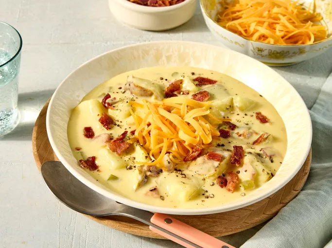

Home
World's Best Potato Soup Recipe

I think this cheesy potato soup recipe is the best! The soup is
rich, creamy, and better than I've ever had in a restaurant.
Ingredients
- 8 unpeeled potatoes, cubed
- 1 onion, chopped
- 2 stalks celery, diced
- 6 cubes chicken bouillon
- 1 pint half-and-half cream
- 1 pound bacon - cooked and crumbled
- 1 (10.5 ounce) can condensed cream of mushroom soup
- 2 cups shredded Cheddar cheese
Steps
- Gather the ingredients.
-
Place potatoes, onions, celery, and bouillon cubes in a large
pot. Add enough water to cover all ingredients. Bring to a boil
and simmer on medium heat for 15 minutes.
-
Add half and half, bacon, cream of mushroom soup and stir until
combined. Add cheese and stir until completely melted. Simmer on
low until potatoes are cooked through and tender.
- Serve and enjoy!